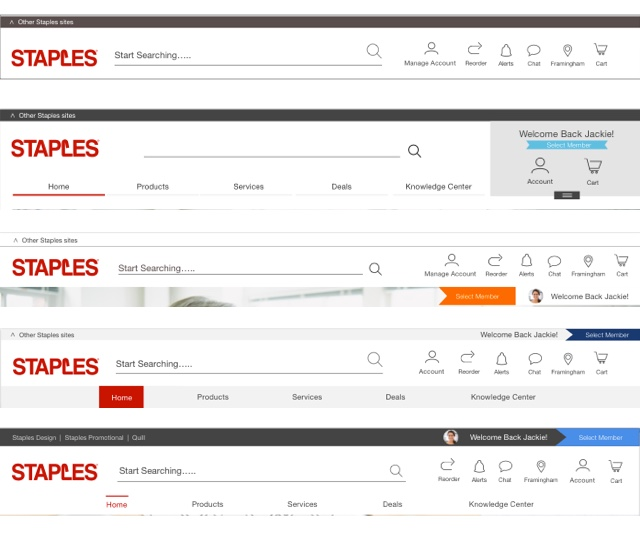

Staples - UX & UI
THE PROJECT
This was a project I worked on during my time at Staples. We did deep dive explorations to see different ways that we could present a new header and browse menus to our users.
MY ROLE
To create multiple user scenarios that would be used for validation, when testing the experience of the new headers. I also created visual designs and wire frames.
GOAL
Our main objective was explore different header layouts and functionalities that met the needs of both business and individual customers. We also had to ensure that the needs of our stakeholders were met.
PROCESS
We began with collecting all the requirments necessary for our users and stakeholders to ensure that we would be designing the headers correctly. Once all of the needs were gathered I began to create user scenarios and header designs.
User Scenarios
When I created the user scenarios I took many factors into consideration including the type of device, transfering from one device to another, age, region and real world distractions. By doing this I was able to create in-depth user scenarios that helped our team down the road.
{kind=link}
CONCLUSION
More work is still being completed for the header and browse menus but, due to privacy policies I am unable to share an extensive look into the work we completed. This snap shot displays some of the work I completed during my time at Staples. I would be happy to explain more in person.
